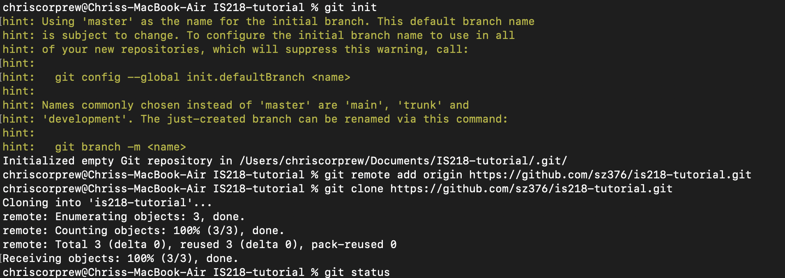

How to host a website on Azure Cloud
How to make a git repository
- Enter terminal and enter “cd Desktop”
- Enter “mkdir” command and name it IS-Website, then “cd IS-Website”
- Once inside the directory, enter git init to initialize a local git repository
- Enter “mkdir public_html”
- Enter "touch public_html/index.html" to make an html page
- Go on to github.com, log in, and make a new git repository without the README.md
- Copy and paste your new github link
- Enter "git branch -M main" to change branch name to default branch name on public repo
- Enter "git remote add origin https://github.com/{username}/{git_repo_name}.git" so that your changes will go to this public repo

- Enter git status to look at what state your files are in (changed, ready to commit, etc.)
- Enter "git add ." to add all files to be ready to commited
- Enter a "git commit -m "Intial commit" for your first commit to the repo
- Enter "git push origin main" to push changes to git repo
How to make a new branch in Git and Merge branches
- Inside your new repo in your terminal, enter "git checkout -b {branch_name}" to make a new branch
- Now inside your new branch, all commits and pushes will on show in this new branch
How to merge branches
- Do merge changes in one branch to another, you will do something called "git pull". A
"git pull" is the same as git merge and git fetch
- Or you could something called a pull request on Github.com. This is usually done when working in a team however, since its
main function is for code review. Once the review is done, you can merge manually on the github.com. Then all users can do a "git pull origin {branch}"
to get the latest changes